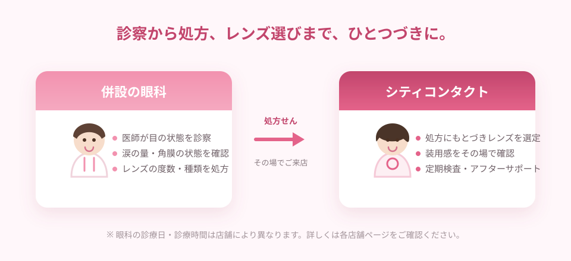

買う前に、
目の状態を診てもらえる
視力だけでなく、目のカーブや涙の状態も確認したうえでの処方になります。「見えるけれど、なんとなく疲れる」を防ぐ第一歩です。
コンタクトレンズは、目に直接のせて使う高度管理医療機器です。
だからこそ「どこで買うか」は、レンズ選びと同じくらい大切。
全店眼科併設のシティコンタクトなら、診察・処方からレンズ選び、その後の定期検査まで、ひとつづきで受けられます。
※ 眼科での検査・診察には、別途 診察料（保険診療の場合は自己負担分）が必要です。
コンタクトレンズは、同じ「1.0が見える度数」でも、目の形やカーブ、涙の量によって合うレンズが変わります。
自分に合うかどうかは、目を診てもらってはじめて分かるもの。
眼科が併設されているコンタクトショップなら、診察を受けて、その処方をもとにレンズを選び、使い始めたあとも同じ場所で相談できます。
初めての方はもちろん、長く使っている方にとっても、いちばん迷いの少ない選び方です。
このページでは、眼科併設のショップが安心な理由と、失敗しないコンタクトショップの選び方を、やさしく解説します。
理由はシンプルで、目を診てもらえる場所と、レンズを選ぶ場所が同じだからです。
買う前も、買ったあとも、迷ったときにすぐ相談できます。
← 横にスクロールしてご覧いただけます →

視力だけでなく、目のカーブや涙の状態も確認したうえでの処方になります。「見えるけれど、なんとなく疲れる」を防ぐ第一歩です。
診察の結果を持って、そのまま店舗へ。スタッフが処方内容を踏まえて、生活スタイルに合うレンズをご提案します。
ゴロゴロする、充血が気になる、見え方が変わってきた——そんなときも、いつものお店で相談できます。「どこに行けばいいの？」と迷いません。
コンタクトレンズは、調子がよくても定期検査が欠かせません。レンズを買う場所と検査を受ける場所が同じだから、無理なく続けられます。
※ コンタクトレンズは高度管理医療機器です。購入方法にかかわらず、眼科医の検査・処方を受け、定期検査を受けながらお使いいただくことが大切です。
※ 目に異常を感じたときは、レンズの使用を中止して眼科医にご相談ください。
価格や近さだけで決めてしまうと、あとから「相談しづらい」と感じることも。
次の4つを目安に選んでみてください。
いちばん大切なポイントです。検査・診察を受けてからレンズを選べること、そして使い始めたあとも同じ場所で相談できることが、長く快適に使うための土台になります。
シティコンタクトは全店 眼科併設1日使い捨て、2WEEK、乱視用、遠近両用、カラーコンタクト、ハードレンズ——選択肢が多いほど、目の状態と暮らし方の両方に合う1枚が見つけやすくなります。
主要メーカーの商品を幅広く取り扱い「スポーツをする」「1日中パソコンを見る」「休日だけ使いたい」。同じ度数でも、使い方によっておすすめは変わります。生活の話を聞いたうえで提案してくれるお店を選びましょう。
つけ外しの練習・ケア方法もご案内見え方が変わったときの度数変更、破損時の対応、定期検査のご案内。コンタクトレンズは「買って終わり」ではなく「使い続けるもの」。続けやすい仕組みがあるかを確かめてください。
定額制プランなら交換・サポートも「安心と信頼のコンタクトレンズ専門店」として、九州・山口を中心に店舗を展開しています。
すべての店舗が眼科併設。検査・診察を受けてからレンズを選び、その後の定期検査まで同じ場所で続けられます。初めての方も、久しぶりの方も安心です。
国内メーカー・メニコンのグループとして、コンタクトレンズ専門店の知識とサポート体制を備えています。定額制の「メルスプラン」もお取り扱いしています。
1日使い捨て・2WEEK・乱視用・遠近両用・カラーコンタクト・ハードレンズ、ケア用品まで。目の状態と暮らし方に合わせてお選びいただけます。
お住まいの近くや通勤・通学の途中で立ち寄れるから、定期検査も続けやすい。ショッピングセンター内の店舗もございます。
※ 店舗により営業時間・併設眼科の診療日が異なります。詳しくは各店舗ページをご確認ください。
コンタクトレンズは、長く付き合っていくもの。
月々定額で使い続けられる定額制プランなら、費用も気持ちも無理なく続けられます。
定額制プランは、レンズを「買う」のではなく「使い続ける」ためのサービスです。
月々の会費で、レンズの交換や度数変更、定期検査まで含めてサポートを受けられます。
見え方が変わったら、そのつどレンズを交換。「まだ残っているから」と、合わない度数のまま使い続けずに済みます。
1DAY・2WEEK・乱視用・カラータイプなど、そのときの生活に合うレンズへの変更をご相談いただけます。
破れた、なくした、調子が悪い。そんな万一のときも交換対応でサポート。定期検査とセットで、長く安心してお使いいただけます。
シティコンタクトの定額制プランは「メルスプラン」と「Miru 3Cプラン」の2つからお選びいただけます。
コンタクトレンズのタイプによって、システムとサポート内容が異なります。
メニコンのコンタクトレンズを安心してお使いいただくためのサービスです。月々リーズナブルな費用で、充実したサポートをご用意しています。
※ プランの内容・料金・対象商品は変更となる場合があります。最新の内容は各プランのページ、または店頭・お電話にてご確認ください。
初めての方も、4つのステップで大丈夫。
迷ったら、まずはお近くの店舗にご相談ください。
お近くの店舗をさがして、ご来店ください。ご予約いただくと、待ち時間を短くできます。保険証をお持ちください。
視力や目の状態を確認し、医師がレンズの度数・種類を処方します。気になっていることは、遠慮なくお伝えください。
処方をもとに、生活スタイルに合うレンズをご提案。初めての方には、つけ外しの練習やケア方法もご案内します。
お渡ししたあとも、定期検査で目の状態を確認。見え方が変わったときや、気になることがあるときもご相談ください。
※ 眼科での検査・診察には、別途 診察料（保険診療の場合は自己負担分）が必要です。
※ 併設眼科の診療日・診療時間は店舗により異なります。ご来店前に各店舗ページをご確認ください。
「そろそろ替えどきかも」「初めてで不安」——どんなご相談でも大丈夫です。
レンズ選びのご相談は無料です。お気軽にご来店ください。
福岡・佐賀・長崎・大分・熊本・鹿児島・山口・鳥取
はじめての方は初めての方へもご覧ください
※ 眼科での検査・診察には、別途 診察料（保険診療の場合は自己負担分）が必要です。
コンタクトレンズは高度管理医療機器です。必ず眼科医の検査・処方を受けてお求めください。
使用前に添付文書をよく読み、正しくお使いください。定期検査は必ずお受けください。
目に異常を感じたときは、直ちに使用を中止し、眼科医にご相談ください。